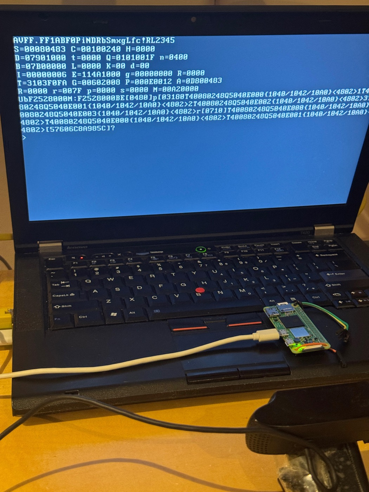

After four quiet weeks, Modus stopped grading itself. Paul Dietz’s ANSI Common Lisp test suite — written by somebody with no stake in whether this implementation passes — went in on Thursday, and Friday is thirty-four commits of the number going up.
A project that writes its own tests is measuring its own intentions. The ANSI suite is different in kind: it is a large body of Common Lisp written against the standard by someone who never saw this implementation, so every file it cannot load is a fact rather than an opinion. Wiring it up starts on Thursday with a test harness and 191 tests, and by that evening real files from the suite are compiling and running.
Friday is the ratchet, and the commit subjects are a graph:
13 real ANSI files: 379/384 pass (98.7%)
16 ANSI files: 421/424 (99.3%)
23 ANSI files: 1349/1656 (81%)
28 ANSI files: 2025 tests (85%)
28 ANSI files: 3052/3695 (82.6%)
46 ANSI files across 3 chapters
94 ANSI files: 2 failures
185 ANSI files, 5804 tests, 0 failures — 11 chapters
The percentage falls as often as it rises, which is the shape of an honest ratchet: each new chapter drags the rate down until the defects behind it are fixed. And the denominator moves because the denominator is a choice — this is a growing selection of the suite, file by file, not the whole of it. “Zero failures” means every file wired up so far passes, and the interesting number is the one beside it: 185 files across eleven chapters, weighted toward cons (68), destructuring (25), sequences (32) and iteration (13).
What went in underneath, in the order the tests demanded it: equal corrected
to expand to the general comparison, variadic append and nconc,
list-length with cycle detection, format, values and
multiple-value-bind, defstruct’s :conc-name and
copier options, LOOP’s always, thereis and
unless, &rest parameters, the iteration macros, package
operations and declarations accepted as no-ops, heap strings and boxed floats so that string
and float literals are objects rather than immediates, and evaluation order preserved in
argument lists — which the suite checks, and almost nobody checks for themselves.
None of that would have been gradeable without one change made the same day. Symbols had
been compiled to a hash of their name, which is fast and works for almost everything —
except identity. (eq 'a 'a) could not be relied on, and a great deal of the ANSI
suite is exactly that question asked in different costumes.
Symbols are now proper objects, interned through a table that maps a name hash to a
unique object. Two reads of the same name produce the same object, so eq
works.
It reaches into the compiler in four places — quoting a symbol emits a call to the
intern routine rather than a raw hash, make-symbol allocates, symbolp
checks a tag, and the subtag test is exposed as a source-level form — and into the
reader, which now produces real symbols. It also quietly fixed a bug in nested
logior and ash that had been diagnosed as an arithmetic problem and
was really a hash comparison.
Until this week the compiler’s only output was a kernel. A new target emits ELF64
userspace binaries instead: an entry stub sets up the runtime registers, asks Linux for a heap
through mmap, and falls into compiled Lisp. The same translator serves both
— a flag switches the console traps from port I/O on a serial chip to
write and read syscalls. The first artefact is a two-kilobyte binary
that prints “Hello from Modus!” and exits cleanly.
That is worth more than a demonstration. A hosted target means the compiler can be tested
without booting anything, which is why the ANSI ratchet was affordable the next day, and it
is the beginning of mvm source.lisp as a command you can run.
Talking to a hosted operating system needs a way to hold a raw address, and doing that in a
moving-collector Lisp needs care. The answer is a System Area Pointer: an object that wraps a
machine address, with a subtag placed in the byte-vector range so the collector copies the
wrapper during collection and never follows what is inside it. Eight opcodes go with it,
along with generic syscall traps and a boot stub that stashes argc and the first
few arguments where Lisp can find them. The proof is small and exactly right:
cat, implemented in Modus, reading a file and writing it to stdout.
Above that, the beginnings of a library that the MVM subset itself can compile —
hash tables built as open addressing over arrays, and nreverse,
nth, member, assoc and append.
The most quietly valuable commits of the week remove documentation. Four things the project believed about its own compiler turned out, when tested, to be false:
let. Believed broken; it is not, and the guard that
had been rejecting deeply nested arithmetic was removed once reduce,
some and every existed to express the check properly.A stale limitation is worse than a known bug, because a known bug gets fixed and a limitation gets designed around. This is the same instinct as adopting the ANSI suite: stop believing things about the implementation and go and measure them.
The week opens on real hardware of a third kind. An i386 Modus kernel boots on a ThinkPad
T420 — from USB mass storage, presented by the Pi Zero 2 W acting as a
gadget, which is a pleasing use of the driver written a month earlier. The 82579LM network
card is brought up without resetting it, on the grounds that the BIOS has already configured
it and a reset loses that, and (+ 1 2) evaluates to 3 over SSH on a laptop with
no operating system on it. There is a VGA console and a PS/2 keyboard REPL that polls the
network between keystrokes, and an EHCI driver that enumerates the controller and then times
out on control transfers — reported as unfinished rather than quietly omitted.

Which is worth pausing on, because the method note below reports the log as quiet from 9 March to 6 April and that reading is correct as far as it goes. The photograph above was taken on 2 April, inside that quiet, and it shows a machine being brought up rather than a machine being demonstrated. The pause is real — nothing was filed for four weeks — but the T420 did not arrive on 6 April fully understood, and the author named a cause for it at the time, on 10 March: “burned all of my claude max quota in half a week.” A log records what was filed, and filing is a thing that needs a budget.